Matplotlib-常用图表
需要学习的不只是如何绘图，更要知道什么样的数据用什么图表展示效果最好
绘图前先载入库
import matplotlib.pyplot as plt
折线图（坐标系图）
折线图用于显示随时间或有序类别的变化趋势
# 绘制一条线时,x轴可以省略,默认用y轴数据的索引代替
plt.plot([0,2,4,6,8]) # 默认Y轴坐标
plt.plot([0,2,4,6,8], [1,5,3,9,7]) # X轴坐标值,Y轴坐标值

线条和标记节点样式
标记字符：标记线条中的点
- 线条颜色，color='g'
- 线条风格，linestyle='--'
- 线条粗细，linewidth=5.0
- 标记风格，marker='o'
- 标记颜色，markerfacecolor='b'
- 标记尺寸，markersize=20
- 透明度，alpha=0.5
线条和标记节点格式字符
- 如果不设置颜色，系统默认会取一个不同颜色来区别线条
- 图像打印时，黑白打印机不能区分颜色,需要风格区分
| 颜色字符 | 风格字符 | 标记字符1 | 标记字符2 | |
|---|---|---|---|---|
r 红色 |
- 实线 |
o 实心圈标记 |
1 下花三角标记 |
|
g 绿色 |
-- 虚线,破折线 |
. 点标记 |
2 上花三角标记 |
|
b 蓝色 |
-. 点划线 |
, 像素标记,极小的点 |
3 左花三角标记 |
|
w 白色 |
: 点虚线,虚线 |
v 倒三角标记 |
4 右花三角标记 |
|
'' 留空或空格,无线条 |
^ 上三角标记 |
s 实心方形标记 |
||
c 青色 |
> 右三角标记 |
p 实心五角标记 |
||
m 洋红 |
< 左三角标记 |
h 竖六边形标记 |
||
y 黄色 |
* 星形标记 |
H 横六边形标记 |
||
k 黑色 |
+ 十字标记 |
D 菱形标记 |
||
x x标记 |
d 瘦菱形标记 |
|||
#00ff00 16进制 |
` | ` 垂直线标记 | ||
0.8 灰度值字符串 |
案例：绘制2017年7月国际外汇市场美元／人民币汇率走势图
| 时间 | 收盘价 |
|---|---|
| 2017年7月3日 | 6.8007 |
| 2017年7月4日 | 6.8007 |
| 2017年7月5日 | 6.8015 |
| 2017年7月6日 | 6.8015 |
| 2017年7月7日 | 6.8060 |
| 2017年7月10日 | 6.8036 |
| 2017年7月11日 | 6.8025 |
| 2017年7月12日 | 6.7877 |
| 2017年7月13日 | 6.7835 |
| 2017年7月14日 | 6.7758 |
| 2017年7月17日 | 6.7700 |
| 2017年7月18日 | 6.7463 |
| 2017年7月19日 | 6.7519 |
| 2017年7月20日 | 6.7595 |
| 2017年7月21日 | 6.7669 |
| 2017年7月24日 | 6.7511 |
| 2017年7月25日 | 6.7511 |
| 2017年7月26日 | 6.7539 |
| 2017年7月27日 | 6.7430 |
| 2017年7月28日 | 6.7374 |
| 2017年7月31日 | 6.7265 |
# 汇率
eurcny = [6.8007,6.8007,6.8015,6.8015,6.8060,6.8036,6.8025,6.7877,6.7835,6.7758,6.7700,6.7463,6.7519,6.7595,6.7669,6.7511,6.7511,6.7539,6.7430,6.7374,6.7265]
# 日期
date = [3,4,5,6,7,10,11,12,13,14,17,18,19,20,21,24,25,26,27,28,31]
plt.plot(
date, # x轴数据，日期
eurcny, # y轴数据，收盘价
color='r', # 线条颜色
linestyle='--', # 线条风格
linewidth=2, # 线条粗细
marker='o', # 标记风格
markerfacecolor='#ffff00', # 标记颜色
markersize=5, # 标记大小
alpha=0.5, # 透明度
)
# 可同时绘制多条折线
plt.plot(eurcny)
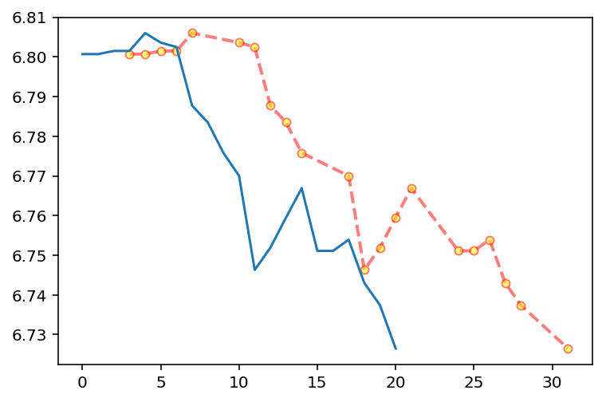
散点图／气泡图
散点图可以显示若干数据系列中各数值之间是否存在相关性
坐标系中,每个值用一个点（x轴，y轴确定）表示
# 数据
x = [1,3,5,7,9,11,13,15,17]
y = [2,-5,19,3,5,8,12,6,1]
# 绘图
plt.scatter(x, y)
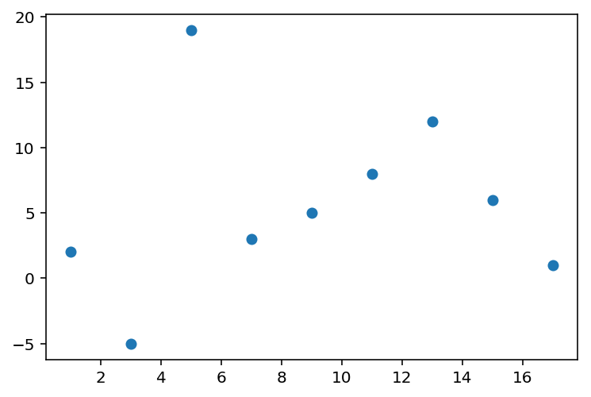
带样式的散点图
plt.scatter(
x, # x轴
y, # y轴
color='r', # 颜色
marker='o', # 样式
linewidth=20, # 线宽
alpha=0.3, # 透明度
# 散点大小，用于绘制气泡图，在散点图的基础上又增加了1个维度
s = [100,300,500,700,200,400,600,800,1000], # 大小
)
# 一张图叠加绘制多类散点
plt.scatter([1,3,5,7,9], [2,4,6,8,10])
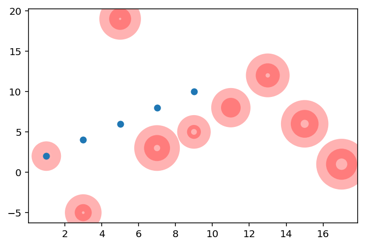
案例：可视化居民年龄／收入和超市销售额的对应关系
数据：
- 顾客年龄
- 顾客年收入
- 顾客年购物金额
需求
- 分析出超市销售额和居民年龄、收入的关系
- 解释关系产生的原因
- 提出建议方案
| 年龄 | 收入 | 销售额 |
|---|---|---|
| 34 | 350 | 123 |
| 40 | 450 | 114 |
| 37 | 169 | 135 |
| 30 | 189 | 139 |
| 44 | 183 | 117 |
| 36 | 80 | 121 |
| 32 | 166 | 133 |
| 26 | 120 | 140 |
| 32 | 75 | 133 |
| 36 | 40 | 133 |
#### 数据
# 年龄
age = [34,40,37,30,44,36,32,26,32,36]
# 收入
income = [350,450,169,189,183,80,166,120,75,40]
# 销售额
sales = [123,114,135,139,117,121,133,140,133,133]
#### 数据可视化
# 分析年龄和销售额的关系
plt.scatter(age, sales)
# 分析收入和销售额的关系
plt.scatter(income, sales)
# 将三列数据画入一张图
# plt.scatter(age, sales)
# plt.scatter(income, sales)
# 数据有数量级差异，不能直接绘制
# 散点图表显示三维数据
plt.scatter(
age,
sales,
s = income,
alpha=0.5,
)
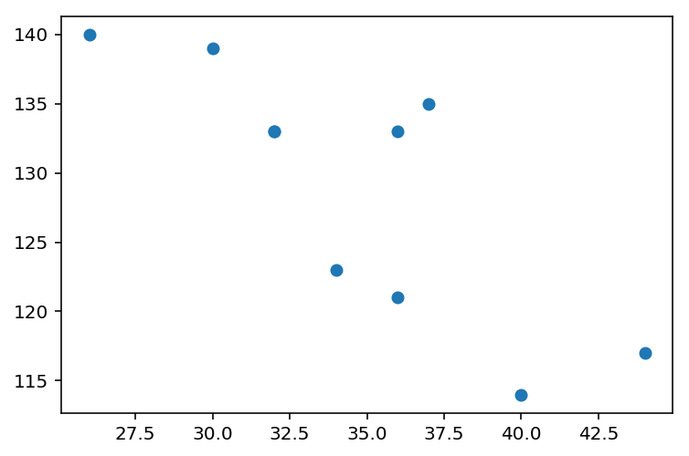 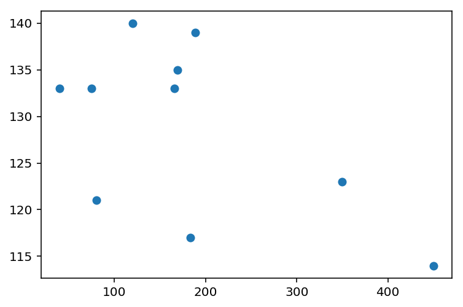 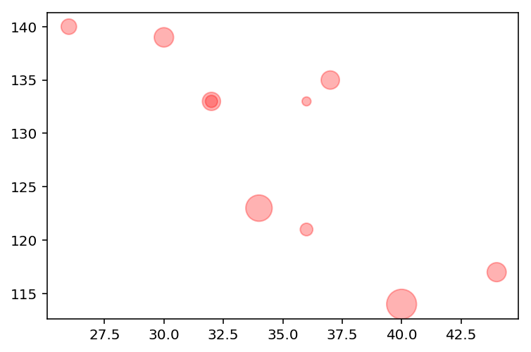
结论：
- 随着年龄的增加，销售额逐渐下降
- 随着收入的增加，销售额逐渐下降
解释：
- 老年人爱买打折降价商品，不愿多花钱
- 高收入人群有自己的高端购物渠道，在普通超市购物较少
营销改进建议：
- 针对特定人群，加大营销力度
- 青年人，25-32岁之前的青年人
- 年收入20万以下的人群
条形图／柱状图
- 条形图（横向）
- 柱状图（纵向）
- 条形图和柱状图用来比较各独立类别下的某单独数据的大小
条形图
x = [1,2,3,4,5]
y = [3,6,1,8,2]
# 柱状图，x轴为单个柱子，y轴为柱子高度，可选参数Width用于柱子粗细
plt.bar(x, y)
# 条形图，注意x，y含义
plt.barh(
x, # 横条离开x轴的距离
y, # 横条长度
height=0.5, # 横条粗细
)
# y轴标注
plt.yticks(x,['a','b','c','d','e'])
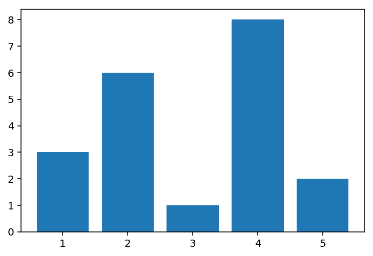 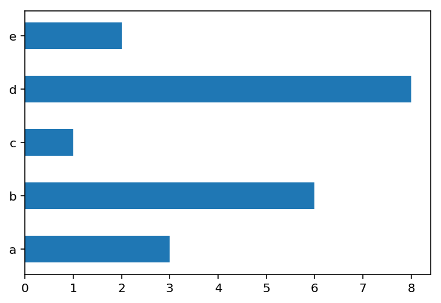
案例：某班级男生和女生各科成绩平均分数据可视化
| 学科 | 男生 | 女生 |
|---|---|---|
| 语文 | 85.5 | 94 |
| 数学 | 91 | 82 |
| 英语 | 72 | 89.5 |
| 物理 | 59 | 62 |
| 化学 | 66 | 49 |
# 男生平均分，语文／数学／英语／物理／化学
boy = [85.5,91,72,59,66]
# 女生平均分
girl = [94,82,89.5,62,49]
# 科目坐标
course = [1,2,3,4,5]
# 绘图，男生
plt.bar(
course, # x轴，科目
boy, # y轴，男生成绩
color = 'g', # 颜色
width = 0.3,
alpha = 0.3,
)
# 绘图，女生
# 科目坐标
course2 = [1.3,2.3,3.3,4.3,5.3]
plt.bar(
course2, # x轴，科目
girl, # y轴，女生成绩
color = 'r', # 颜色
width = 0.3,
alpha = 0.3,
)
# 科目坐标数值替换为字符
course3 = [1.15,2.15,3.15,4.15,5.15]
plt.xticks(course3, ['Chi','Math','Eng','Phy','Che'])
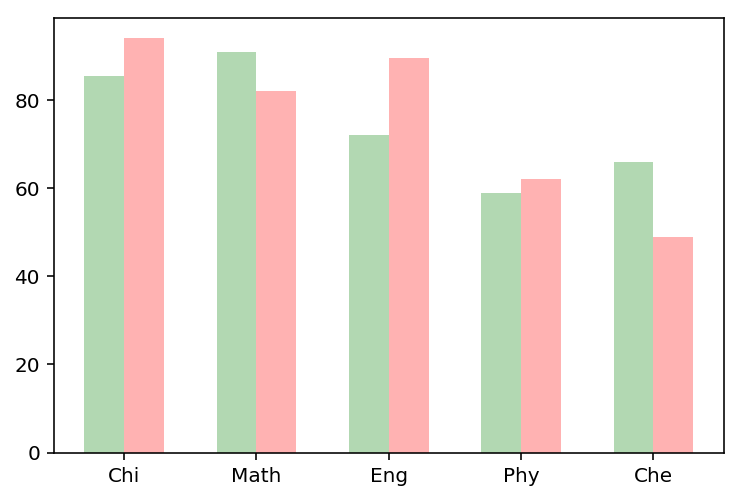
拓展：可将数值标注于柱状图顶
# 将数据标注在柱子上
for i,j in zip(course,boy):
plt.text(
i, # x轴，course学科位置
j, # y轴，boy分数
'%.1f' % j, # 数据转为一位小数
ha='center', # 水平对齐
va='bottom', # 垂直对齐
alpha = 0.5,
)
for i,j in zip(course2,girl):
plt.text(
i,
j,
'%.1f' % j,
ha='center',
va='bottom',
alpha = 0.5,
)
饼图
饼图用于显示各项相对总和的百分比大小
# 数据，会被饼图自动转换为百分比
p = [15,30,45,10]
plt.pie(p)
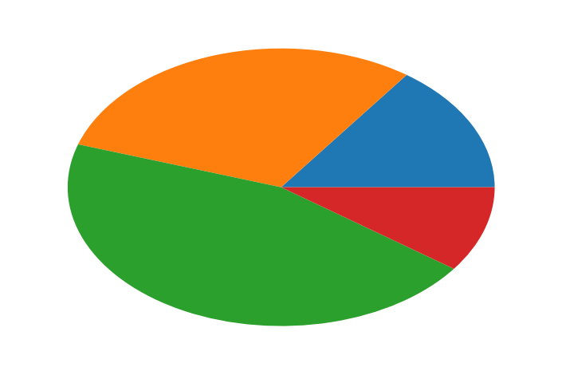
案例：2017年9国军费占比数据可视化
| 国家 | 军费占比 |
|---|---|
| 美国 | 0.5548467 |
| 中国 | 0.14444868 |
| 印度 | 0.05094268 |
| 沙特 | 0.04846696 |
| 俄国 | 0.046753 |
| 日本 | 0.04418206 |
| 英国 | 0.04161112 |
| 德国 | 0.03799276 |
| 法国 | 0.03075605 |
# 国名
mark = ['America','China','India','Saudi','Russia','Japan','Britain','Germany','France']
# 各国占9国总军费的比例
percent = [0.5548467,0.14444868,0.05094268,0.04846696,0.046753,0.04418206,0.04161112,0.03799276,0.03075605]
plt.pie(
percent, # 百分比
labels = mark, # 名称
explode=(0,0.1,0,0,0,0,0,0,0), # 突出块，突出比例
autopct='%1.1f%%', # 显示百分比方式
shadow=False, # 阴影效果
startangle=-110, # 饼图起始的角度,度数,默认0为右侧水平180度开始，逆时针旋转
)
plt.axis('equal') #正圆形饼图,x/y轴尺寸相等.默认是扁图
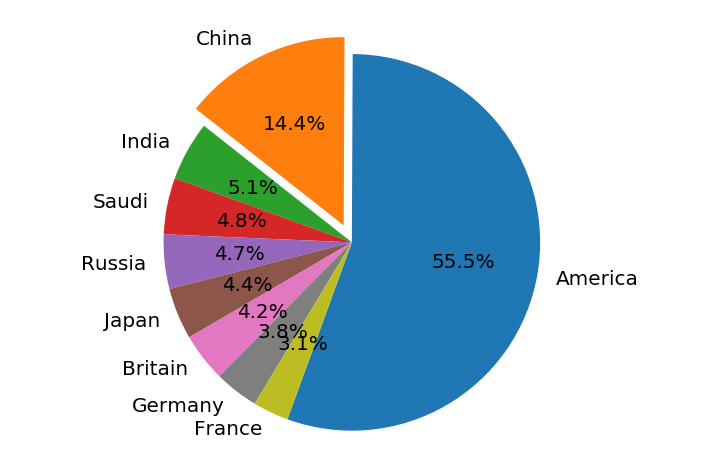
直方图
- 直方图是表达数据的分布情况的统计图表，一般用来表示同等区间内,某类数值出现的个数或频率(频率=出现次数/总数)
- x轴表示分组数据，y轴表示分布情况
- 从频率分布直方图可以直观估计出：
- 众 数：频率分布直方图中最高矩形的底边中点的横坐标
- 中位数：把频率分布直方图分成两个面积相等部分的平行于Y轴的直线横坐标
直方图与柱状图的区别：
- 直方图：分区之间连续无间断，表示连续变量；值用矩形面积表示
- 条形图：各柱之间有间隙，表示孤立的、不连续分类变量；值用矩形长度表示
案例：1班和2班语文成绩统计数据可视化
# 成绩数据
h1 = [ 88.2, 83.5, 68.8, 85.4, 78.6, 69.3, 60.6, 91.2, 52.7,
85.9, 57.1, 68. , 66.6, 78.2, 78.8, 85. , 89.1, 74.4,
93.6, 75.7, 54.3, 55. , 90.9, 79.4, 94.4, 86.7, 82.4,
76.7, 78.7, 72.3, 83.9, 78.6, 80. , 70.5, 87.1, 80.3,
87.9, 65.1, 67.4, 61.5, 49.7, 77.1, 91.4, 72. , 61.5,
73.9, 76.9, 88.2, 51.2, 53.9]
h2 = [ 79.5, 99. , 80. , 71. , 79.2, 85.6, 79.2, 68.8, 68.7,
96.5, 63.8, 81.8, 76.9, 80. , 73.8, 77.1, 79.6, 76.8,
73.9, 73.2, 66. , 76.2, 76.4, 65.3, 75.2, 74.5, 87.5,
78.4, 95. , 72.6, 86. , 71.7, 71. , 87.7, 83.9, 76.8,
72.3, 67. , 67.8, 79.6, 81.9, 83. , 65.6, 91.6, 75.5,
77.6, 82.8, 87.5, 75.1, 79.4]
直方图：
# 1班成绩直方图
plt.hist(h1)
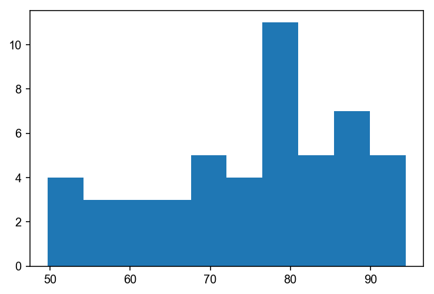
增加功能：
plt.hist(
h1, # 直方图数据
10, # 直方个数
density=1, # 默认0 数据出现个数，1 出现个数归一化为出现的频率
histtype='bar', # 直方图样式：默认bar，stepfilled填充颜色，step不填充只有线条
facecolor='b', # 直方图颜色
edgecolor = 'g', # 直方图边框颜色
alpha=0.3,
)
# 直方图叠加
plt.hist(h2, 10, density=1, histtype='bar', alpha = 0.3)
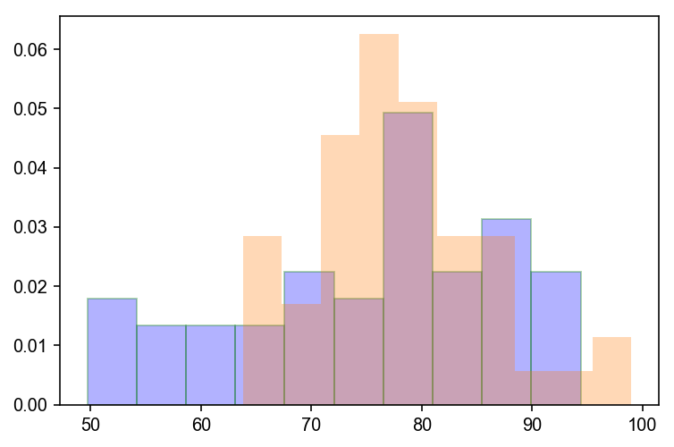
箱线图
箱线图又名盒须图，是一种用作显示一组数据离散情况的统计图表，常用作多组数据的综合统计比较
四分位数：
- 第一四分位数(Q1)，又称“较小四分位数”，等于该样本中所有数值由小到大排列后第25%的数字。
- 第二四分位数(Q2)，又称“中位数”，等于该样本中所有数值由小到大排列后第50%的数字。
- 第三四分位数(Q3)，又称“较大四分位数”，等于该样本中所有数值由小到大排列后第75%的数字。
箱线图主要包含5个统计量，从上到下，从高到低：
- 最大非异常值，上边线
- Q3，箱体上边缘上四分位数
- Q2，中位数线
- Q1，箱体下边缘下四分位数
- 最小非异常值，下边线
除了上面5个统计量，上下边缘外侧可能还有异常值
- Q3和Q1的差值，即四分位数差
- 大于Q3 1.5倍四分位数差的值，或者小于Q1 1.5倍四分位数差的值，划为异常值
a = [15,5,9,22,4,-5,45,-22]
plt.boxplot(a)
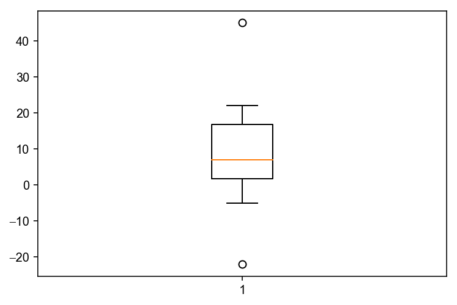
案例：某班级a/b/c三组学员数学成绩统计分析可视化
| 组别\编号 | 1 | 2 | 3 | 4 | 5 | 6 | 7 | 8 |
|---|---|---|---|---|---|---|---|---|
| a | 42 | 55 | 79 | 68 | 15 | 98 | ||
| b | 32 | 59 | 77 | 100 | 92 | 88 | 5 | 0 |
| c | 92 | 98 | 78 | 65 | 97 | 100 | 0 |
a = [42,55,79,68,15,98]
b = [32,59,77,100,92,88,5,0]
c = [92,98,78,65,97,100,0]
plt.boxplot(
(a,c,b), # 数据
labels = ('a','c','b'), # 标签
showfliers = True, # 是否显示异常值，默认显示
whis = 1.5, # 指定异常值参数：默认1.5倍四分位差
showmeans = True, # 是否显示平均值，默认不显示
meanline = True, # 是否用线标示平均值，默认用点
widths = 0.5, # 柱子宽度
vert = True, # 默认True纵向，False横向
patch_artist = True, # 是否填充颜色
boxprops = {'facecolor':'#ffff00','color':'green'}, # 箱体样式
)
plt.grid(linewidth=0.2)
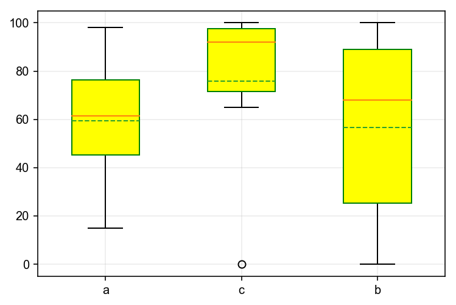
热力图
热力图以二维形式展示数据的大小，主要用于数据的重要程度／相关度展示
a = [
[1, 2, 3],
[4, 5, 6],
[7, 8, 9]
]
plt.imshow(a)
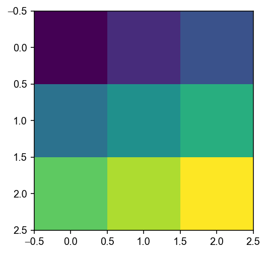
plt.imshow(
a, # 数据
cmap='gray', # 配色，gray灰度
origin='lower', # 水平翻转，默认upper,lower
interpolation='lanczos', # 渲染，模糊
)
plt.colorbar() #侧栏

叠加图像到背景上
img = plt.imread('xiangnong.jpg') # 将图像转为数组
extent = (0, 25, 0, 25) # 按 左右下上 位置拉伸填充图像
plt.imshow(img, extent=extent)
# 将新图叠加到上图之上
plt.scatter([12.5, 15.5],[19, 19.5], s=[100, 200], color='r', alpha=0.7)
plt.axis("off") # 去掉坐标轴